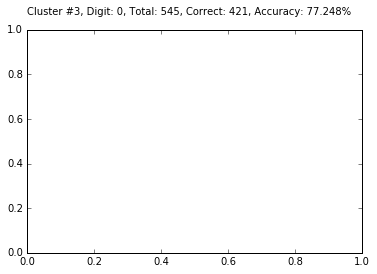

Python 2.7.12 |Anaconda 4.2.0 (64-bit)| (default, Jun 29 2016, 11:07:13) [MSC v.1500 64 bit (AMD64)]
Type "copyright", "credits" or "license" for more information.
IPython 5.1.0 -- An enhanced Interactive Python.
? -> Introduction and overview of IPython's features.
%quickref -> Quick reference.
help -> Python's own help system.
object? -> Details about 'object', use 'object??' for extra details.
In [1]: runfile('C:/Users/xeroj/Downloads/V/Computer Vision/Lab4_Clustering__Classification/lab4_problem2.py', wdir='C:/Users/xeroj/Downloads/V/Computer Vision/Lab4_Clustering__Classification')
-----========== Dataset Loading
Dataset: MNIST , Feature: PIXEL Algorithm: KMEANS
Took 4.799 s to load and split MNIST
Training: 60000 ,Testing: 10000
-----========== Computing Features: PIXEL
Took 0.000 s to compute features
-----========== Clustering Training: KMEANS
Performing KMEANS training for 60000 images.
KMEANS took 141.826 s for k = 10
-----========== KMEANS Training Accuracy Evaluation
Checking the accuracy of KMEANS using 60000 images
Cluster #0, Digit: 4, Total: 8930, Correct: 3189, Accuracy: 35.711%
Cluster #1, Digit: 8, Total: 6568, Correct: 3452, Accuracy: 52.558%
Cluster #2, Digit: 7, Total: 8846, Correct: 3774, Accuracy: 42.663%
Cluster #3, Digit: 2, Total: 4690, Correct: 4198, Accuracy: 89.510%
Cluster #4, Digit: 3, Total: 7452, Correct: 3922, Accuracy: 52.630%
Cluster #5, Digit: 0, Total: 3157, Correct: 2506, Accuracy: 79.379%
Cluster #6, Digit: 1, Total: 5965, Correct: 3717, Accuracy: 62.313%
Cluster #7, Digit: 0, Total: 3088, Correct: 2794, Accuracy: 90.479%
Cluster #8, Digit: 6, Total: 5719, Correct: 4915, Accuracy: 85.942%
Cluster #9, Digit: 1, Total: 5585, Correct: 2977, Accuracy: 53.303%
KMEANS Training Accuracy: 59.073 %
KMEANS took 0.036 s for k = 10
-----========== KMEANS Testing
Performing K-Means testing for 10000 images.
KMEANS took 0.065 s for k = 10
-----========== KMEANS Testing Accuracy Evaluation
Checking the accuracy of KMEANS using 10000 images
Cluster #0, Digit: 4, Total: 1552, Correct: 559, Accuracy: 36.018%
Cluster #1, Digit: 8, Total: 1098, Correct: 586, Accuracy: 53.370%
Cluster #2, Digit: 7, Total: 1427, Correct: 603, Accuracy: 42.256%
Cluster #3, Digit: 2, Total: 801, Correct: 709, Accuracy: 88.514%
Cluster #4, Digit: 3, Total: 1316, Correct: 696, Accuracy: 52.888%
Cluster #5, Digit: 0, Total: 545, Correct: 423, Accuracy: 77.615%
Cluster #6, Digit: 1, Total: 995, Correct: 660, Accuracy: 66.332%
Cluster #7, Digit: 0, Total: 492, Correct: 447, Accuracy: 90.854%
Cluster #8, Digit: 6, Total: 927, Correct: 794, Accuracy: 85.653%
Cluster #9, Digit: 1, Total: 847, Correct: 469, Accuracy: 55.372%
KMEANS Testing Accuracy: 59.460 %
KMEANS took 0.004 s for k = 10
Program ran for 146.732 s
In [2]: runfile('C:/Users/xeroj/Downloads/V/Computer Vision/Lab4_Clustering__Classification/lab4_problem2.py', wdir='C:/Users/xeroj/Downloads/V/Computer Vision/Lab4_Clustering__Classification')
Reloaded modules: lib_features, lib_mnist, lib_cifar
-----========== Dataset Loading
Dataset: MNIST , Feature: PIXEL Algorithm: KMEANS
Took 4.863 s to load and split MNIST
Training: 60000 ,Testing: 10000
-----========== Computing Features: PIXEL
Took 0.005 s to compute features
-----========== Clustering Training: KMEANS
Performing KMEANS training for 60000 images.
KMEANS took 119.622 s for k = 10
-----========== KMEANS Training Accuracy Evaluation
Checking the accuracy of KMEANS using 60000 images
KMEANS Training Accuracy: 59.057 %
KMEANS took 0.433 s for k = 10
-----========== KMEANS Testing
Performing K-Means testing for 10000 images.
KMEANS took 0.057 s for k = 10
-----========== KMEANS Testing Accuracy Evaluation
Checking the accuracy of KMEANS using 10000 images
KMEANS Testing Accuracy: 59.460 %
KMEANS took 0.351 s for k = 10
Program ran for 125.333 s


In [3]: runfile('C:/Users/xeroj/Downloads/V/Computer Vision/Lab4_Clustering__Classification/lab4_problem2.py', wdir='C:/Users/xeroj/Downloads/V/Computer Vision/Lab4_Clustering__Classification')
Reloaded modules: lib_features, lib_mnist, lib_cifar
-----========== Dataset Loading
Dataset: MNIST , Feature: PIXEL Algorithm: KMEANS
Took 4.883 s to load and split MNIST
Training: 60000 ,Testing: 10000
-----========== Computing Features: PIXEL
Took 0.005 s to compute features
-----========== Clustering Training: KMEANS
Performing KMEANS training for 60000 images.
KMEANS took 150.644 s for k = 10
-----========== KMEANS Training Accuracy Evaluation
Checking the accuracy of KMEANS using 60000 images
KMEANS Training Accuracy: 59.070 %
KMEANS took 0.461 s for k = 10
-----========== KMEANS Testing
Performing K-Means testing for 10000 images.
KMEANS took 0.059 s for k = 10
-----========== KMEANS Testing Accuracy Evaluation
Checking the accuracy of KMEANS using 10000 images
KMEANS Testing Accuracy: 59.450 %
KMEANS took 0.355 s for k = 10
Program ran for 156.408 s


In [4]: